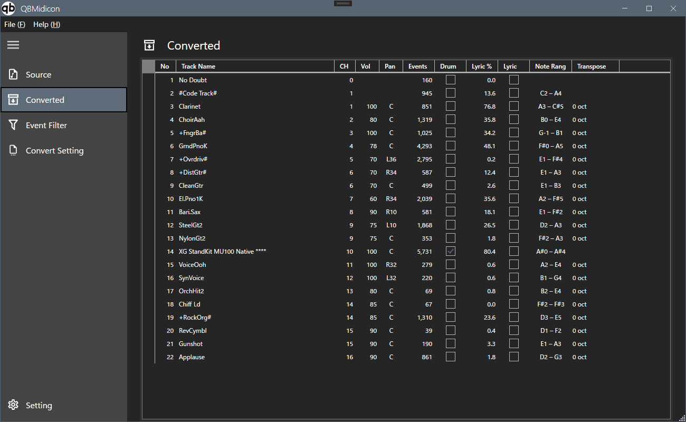

Event Filter と Convert Setting の内容を反映した、変換後のトラック一覧を表示します

画面項目
| 項目 | 説明 |
|---|---|
| No | トラック番号 |
| Track Name | トラック名 |
| CH | MIDIチャンネル |
| Vol | トラックのボリューム値 |
| Pan | トラックのパン値 |
| Events | トラック内のイベント数 |
| Drum | ドラムトラックかどうかの判定・指定 |
| Lyric % | そのトラックのMIDIデータ（ノート）が歌詞イベントとどのくらい一致しているかを表す割合です |
| Lyric | 歌詞データの有無・内容 |
| Note Rang | トラック内で使用されているノートの音域 |
| Transpose | トラックごとのトランスポーズ量 |